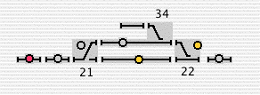
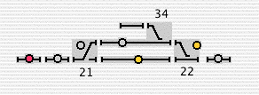

The JMRI project is building tools for model railroad computer control. We
want it to be usable to as many people as possible, so we're building it
in Java to run anywhere, and we're trying to make it independent of specific
hardware systems.
News
Version 1.2 is released!
The updated production version 1.2 is available for download
via the README page.
Thanks and congratulations to all who contributed!
This program allows you to program DCC decoders from your computer without having to
remember cryptic CV numbers and hexidecimal arithmetic. DecoderPro provides a
set of screens on which you can select the various options and values you want.
Setting up special sound or lighting effects for your locomotive has never been easier!
DecoderPro works with most of the popular DCC systems (Digitrax, EasyDCC, NCE, Lenz, Wangrow, Zimo, etc.),
and runs on both Windows, Linux, and Macintosh systems. It works via your DCC programming track,
or optionally can be used to program locomotives directly on the main track.
One of the more daunting tasks that you'll ever face is setting up a custom speed table for your
locomotive. Instead of editing individual CV values from your throttle, DecoderPro lets you use
your mouse to make adjustments in a more intuitive fashion.
If you are trying to set up custom lighting effects on a Digitrax FX decoder, instead of having to
remember what values to type in, you can choose the proper effect from a popup menu.
DecoderPro is customizable using text files, which means that supporting new decoders in the
future can be done without modifying the program at all. In fact, most of the screens for new
decoders now supported have come from folks all over the internet.
Finally, DecoderPro can also keep all your settings in a file on the computer for safe keeping.
Downloading DecoderPro
In order to download DecoderPro just visit the README page, and click
on the instructions for your particular type of computer or operating systems (Windows,Linux, or Mac).
Joe Ellis has written a manual for DecoderPro, which contains a nice tutorial
and can be downloaded here.
More Info on JMRI
Like the CMRI system before it, JMRI is intended as a jumping-off point for
hobbyists who want to control their layouts from a computer without having to
create an entire system from scratch.
To do this, we've split the problem into two parts with an interface in-between:
"Above" the interface are the cool tools that people want. Our first examples are
programmers for DCC decoders and layout controls. The hope is that we can develop
better and better tools that still will work on lots of type of computers, with lots
of types of layouts.
"Below" the interface lies code that connects to specific layout hardware. Our initial
work was with Digitrax® systems, as they provide a lot of functionality already
and really good support is available. We also connect to NCE PowerHouse, EasyDCC,
Lenz, Wangrow and Zimo systems, providing
the full functionality. We are certainly interested in connecting to other systems.
The long-term strategy is to:
Create a set of publically available common interfaces for model railroad control code, suitable for use with any type of layout, from any type of computer.
Demonstrate the technical feasibility of these interfaces with initial DCC-based implementations.
Encourage interoperability of layout hardware and software through the use of common interfaces.
In the short term, we've created several programs based on the JMRI
libraries to move the project along and demonstrate its capabilities.
The most popular is
DecoderPro, a better tool for programming decoders.
It simplifies the job of configuring complicated DCC decoders by providing
screens on which you can select the various options and values you want. These
screens show the exact contents of each specific decoder type. Both
the programming screens and decoder information are stored in text files,
so you can make up new ones as desired.
You're welcome to download the full version of this program and try it; please see the
README file
for additional information on how to install. We welcome feedback!
We've also created a demo program to show the complete set of tools as they are developed:
control and display turnout positions
program decoders,
display and control layout power monitor layout traffic, etc.
Nick Kulp's Cornwall Road
uses a JMRI-based dispatcher panel that works with his C/MRI and Digitrax systems.
For more information on the tools for building simpler control panels, please see the
Panels page. The
PanelPro application makes it easy to build these panels.
JMRI also provides a package
LocoNet-specific tools
for monitoring of the LocoNet and the command station slots, and also for sending user-defined
packets. These form the basis of the
LocoTools application
which you're welcome to download and use.
These programs run on Windows, Linux, Macintosh (Classic and MacOS X) and OS/2 with only small
exceptions. They work well with DCC systems from Digitrax, Intellibox, Atlas, Lenz, EasyDCC, NCE
and Wangrow, in addition to serial C/MRI systems. This gives us some confidence in the
approach.
If you're interested in using these libraries and tools
with other model railroad equipment, with or without DCC, please
join in the effort.
The
acknowledgements page
shows that a lot of people have been able to contribute.
The JMRI name is chosen to bring to mind a "Java model railroad interface", but
to comply with the Sun licensing policy JMRI is not an acronym.
Downloads
JMRI is an open-source project, so you can get the entire source code at any time
via the Project page. If you'd
prefer to download running programs, including DecoderPro, we have the most recent
one (version 1.1) freely available for download.
You should read the
README page
for details on what layout hardware will work, what you'll need to connect, and instructions on how
to download, install and run the program.
In between production versions, we also produce test versions. You might like
to try those, as new features become available there first. They are
announced on the "JMRI users" discussion group at
http://groups.yahoo.com/group/jmriusers/
How can you use this?
There are several different ways to use JMRI:
Use
DecoderPro to configure your locomotive decoders and
keep a roster.
Use the LocoTools application
with your Digitrax command station to control your layout, monitor communications,
configure add-on devices, etc.
You can just run the demo and use the tools it provides. As we
add more and more, the demo becomes more useful. But you shouldn't expect
it to be as powerful as a commercial layout management program; JMRI
isn't meant to compete directly with them.
You can use the JRMI interfaces to write programs for your own layouts.
Making this easy is an important goal.
You can write new general-purpose tools. Although this is a little
harder than writing automation for your own layout, writing tools that other
people use can be very satisfying.
You can implement the JMRI interfaces for a new system.
Having JMRI work with other systems is an important goal.
Once an implementation for another system works, the general tools (e.g.
symbolic programmer, automations tools, signalling, etc) can be immediately
used.
Further information
The jmri-announce
mailing list carries announcements of new versions, major changes, etc.
This list is intended to be very low traffic; discussions, etc, should take place elsewhere.
You can subscribe
by sending the word "subscribe" in the subject or body of an email to
jmri-announce-request@lists.sourceforge.net.
We have a "JMRI users" Yahoo group for general discussion. If you want to ask a question, get some
help, or suggest some improvement, that discussion group is a good place. You can
subscribe, browse posts, etc, at
http://groups.yahoo.com/group/jmriusers/.
Our technical web pages are still being written.
This is still an early stage, and we're critically short of documentation.
But if you're interested
in working with the code, we'd love to help you get started via email, etc.
Hardware requirements
JMRI connects to a LocoNet via a Digitrax MS100 adapter or a LocoBuffer.
Lenz and Atlas systems require a LI100 interface; note that you can't
program decoders with an Atlas system and an LI100 due to limitations of the Atlas Commander.
EasyDCC, Wangrow and NCE command stations connect directly to a serial port. For more information,
please see the
README file.
The demo is developed on a USB Macintosh, which is interfaced to a layout and LocoNet via
a Keyspan PDA Adapter, DB9 to DB25 cable, and a Digitrax MS100 and/or LocoBuffer. The
Keyspan PDA adapter also works for connecting to the NCE command station. Note that
MacOS X systems cannot communicate with an MS100.
Digitrax-specific information
As a convenience for people using JRMI with Digitrax systems, we've got a directory of
Digitrax-specific information:
JMRI is a volunteer project, and we welcome people to contribute in any way.
Contributors include:
Debbie Ames of Lenz USA, who has provided valuable information on the
Lenz decoders and loaned equipment for testing
Patrick Beard, who allows us to distribute his javax.comm.MRJ package for the Macintosh
Paul Bender, who wrote the XpressNet throttle code
Dave Boydston of Serialio.com, who helped with the Windows connection to an MS100.
Check out their great Java serial library!
Sip Bosch, who contributed Zimo and ESU decoder definitions
Seth Cohen, who helped get serial sensors and NCE AIUs to work, and wrote
the speedometer web page
Mike Davison, who got the Linux serial connection working with Java 1.4,
has helped with the EasyDCC code, and helped debug the Ant compilation process
Joe Ellis provided the DecoderPro configuration files for the Lenz LE077XF decoder
and has done a fantastic job on the manual
Joseph Goldstone, who put together the javax.comm implementation for Mac OS X
John Jabour, who created the LocoBuffer and thereby made reliable LocoNet communications routine
Bob Jacobsen, who maintains this code and wrote a lot of the initial code


 
